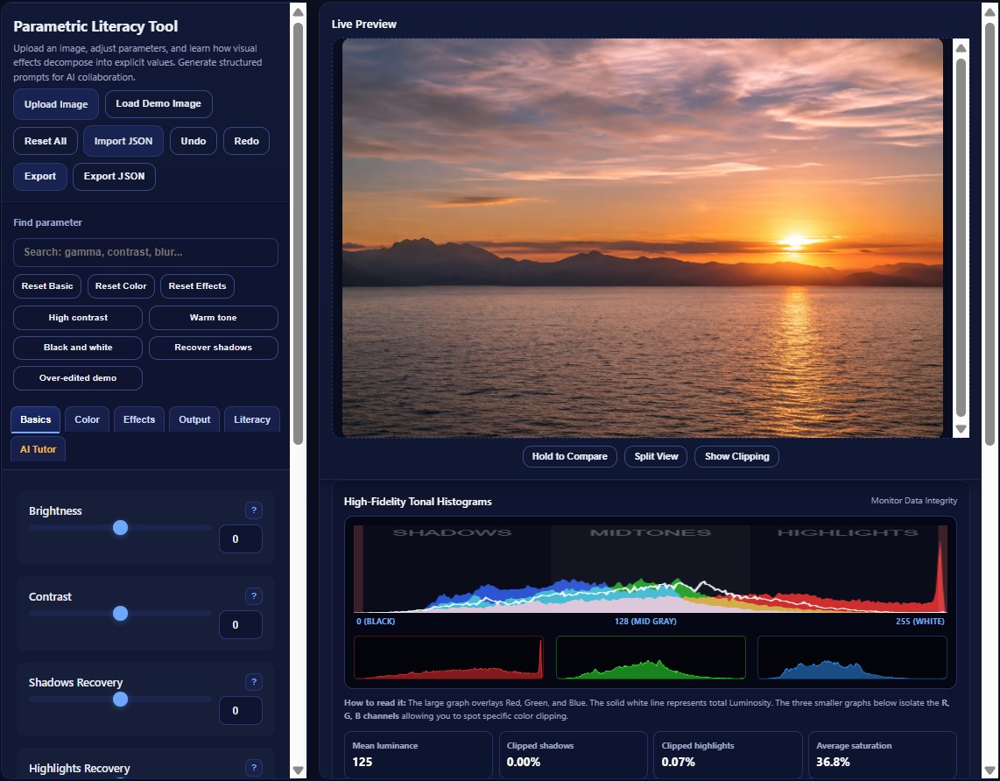
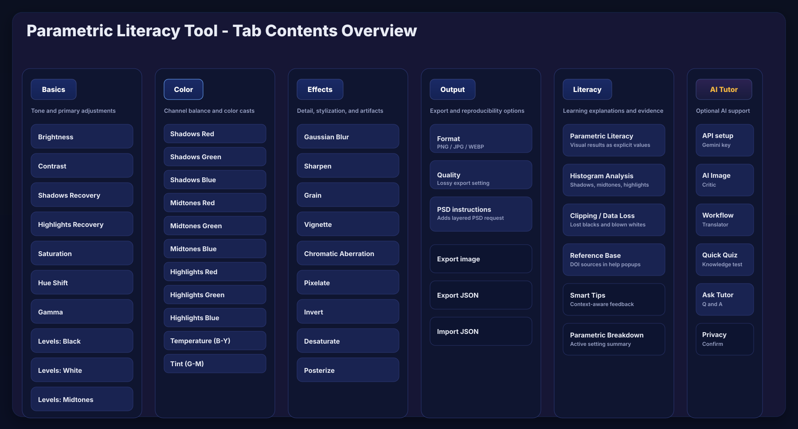
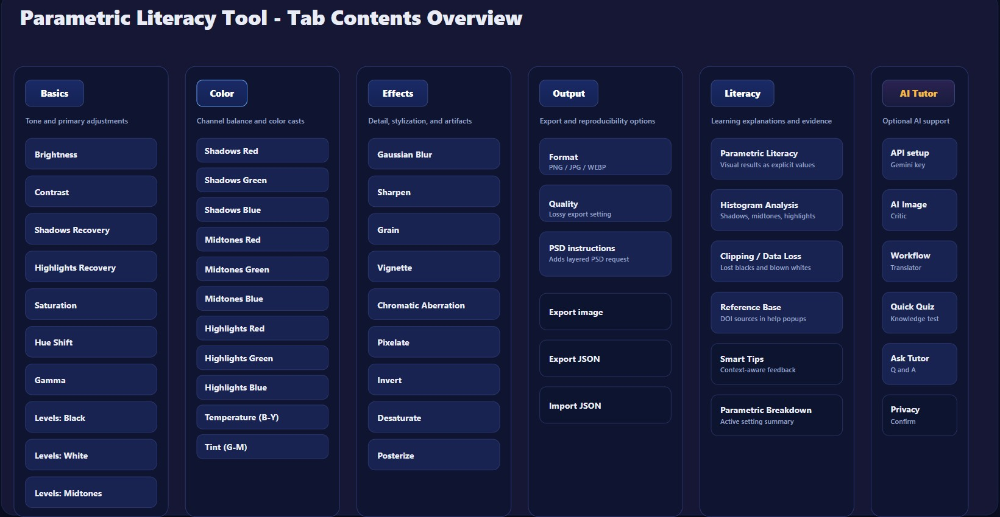
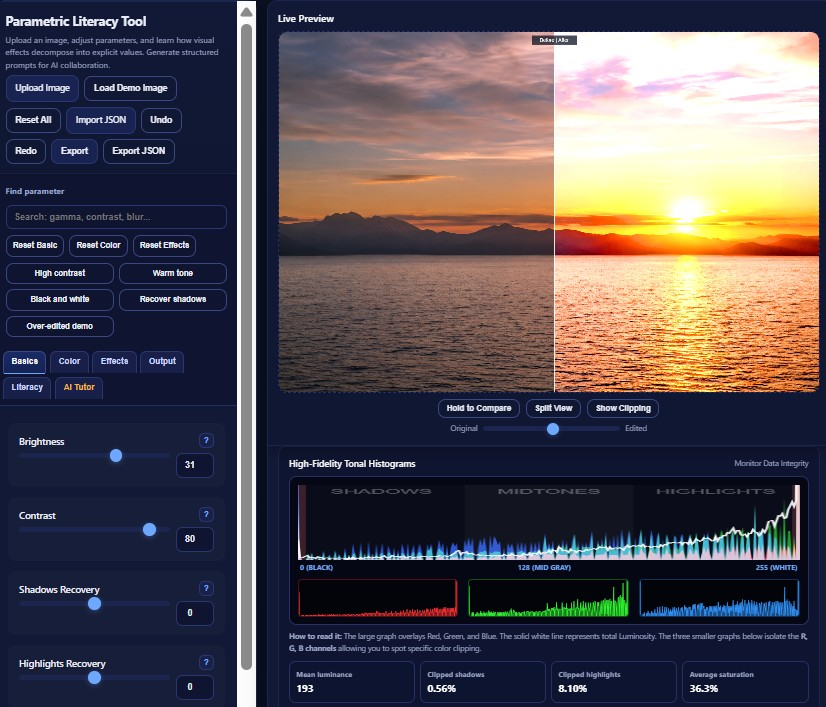
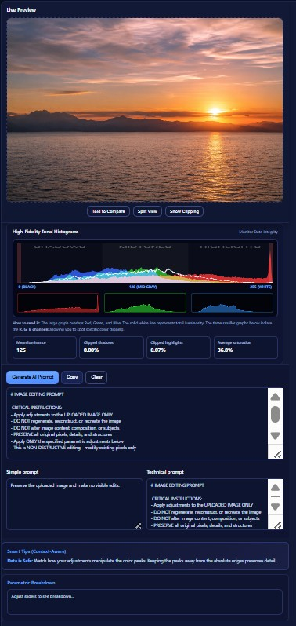
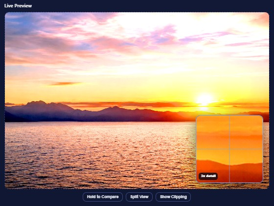
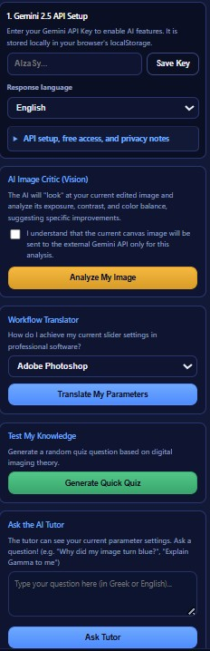
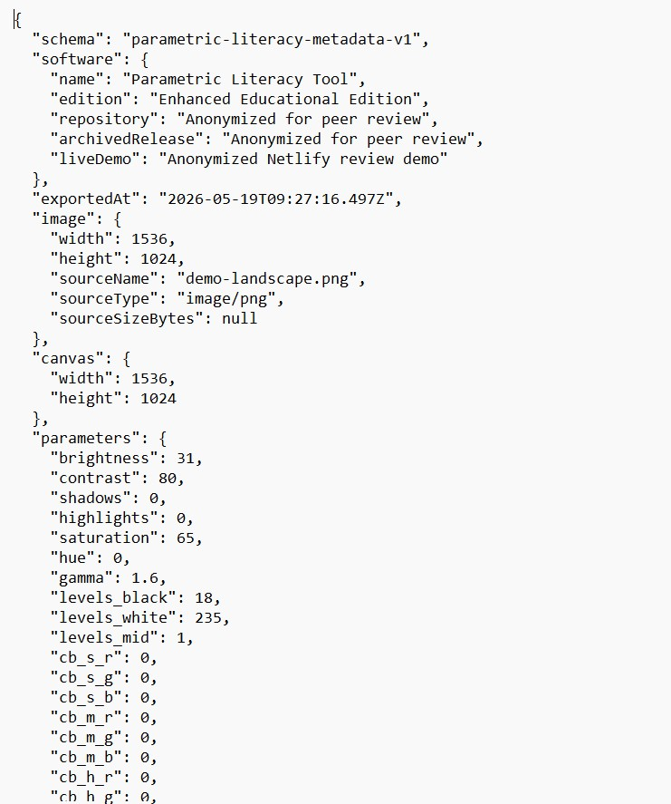

1. Purpose and Scope
The Parametric Literacy Tool is designed for teaching digital imaging as a measurable, parameter-based process rather than a sequence of opaque interface actions. Learners upload an image, adjust tonal and color parameters, inspect real-time histograms, diagnose clipping, export image and metadata outputs, and optionally request AI-generated parameter-aware feedback.
In the context of design education and AI literacy, parametric literacy refers to the ability to describe a visual result through explicit adjustable values such as brightness, contrast, gamma, hue, saturation, color balance, blur, sharpening, and output format. This ability supports both traditional digital image editing and clearer communication with generative AI systems.

2. Installation and Execution
The application is a zero-install browser application. The core tool does not require a server, database, package manager, build step, or JavaScript framework.
Running the Tool
- Open the live GitHub Pages demo or download the repository.
- Open
enhanced_parametric_app.htmlin a modern browser. - Upload an image through the Upload Image button.
- Move sliders to observe canvas, histogram, and diagnostic changes.
- Use Export for processed images and Export JSON for reproducible parameter metadata.
Recommended public demo: https://gk1966.github.io/Parametric_Literacy_Learning_Tool/
3. User Guide and Feature Map
3.1 Tab Contents Overview
The application is organized into six main tabs: Basics, Color, Effects, Output, Literacy, and AI Tutor. The overview figure summarizes the content of each tab in a single documentation-ready visual map.

3.2 Controls, Presets, and Menus
The controls panel combines image loading, demo image loading, reset actions, import/export JSON, parameter search, group resets, preset examples, and tab navigation. This layout supports rapid experimentation while keeping parameter values explicit and reproducible.

3.3 Before/After Split View
The improved preview area includes a before/after split view. This allows learners to compare the original and edited image directly, making strong tonal changes and over-editing easier to understand.

3.4 Histogram, Metrics, and Prompt Output
The diagnostic area combines RGB/luminance histograms, clipping percentages, mean luminance, average saturation, generated image-editing prompts, simplified prompts, technical prompts, context-aware tips, and parametric breakdown.

3.5 Detail Inspection Zoom
The preview includes a point-inspection zoom lens. Clicking or tapping on the image opens a magnified local view, helping learners inspect blur, sharpening, noise, clipping, and local detail changes.

3.6 AI Tutor Panel
The AI Tutor panel is optional. It supports image critique, workflow translation, quiz generation, and free-form tutoring. The panel also includes API setup and privacy notes so that learners understand the data flow before invoking external AI services.

4. Software Architecture
The system uses a client-side architecture: user input updates a shared state object, the rendering pipeline applies image transformations to the current canvas, and diagnostic modules update histograms and overlays. This makes the core editing workflow transparent, inspectable, and easy to archive as open-source software.
4.1 Configuration-Driven UI Generation
Parameters are described in the groups configuration object and injected into the interface by
mountGroups(). This separates control definitions from the DOM construction logic and supports
future extension.
const groups = {
basic: [
{ key: 'brightness', label: 'Brightness', type: 'range', min: -100, max: 100 },
{ key: 'contrast', label: 'Contrast', type: 'range', min: -100, max: 100 }
],
color: [...],
effects: [...]
};
function mountGroups(){
for (let gName in groups) {
const arr = groups[gName];
const container = document.getElementById('group-' + gName);
// Controls are created dynamically from the parameter definitions.
}
}Adding a new processing feature still requires an appropriate parameter definition, state key, and processing function. The benefit is reduced coupling, not automatic filter generation.
4.2 Canvas/ImageData Processing Pipeline
Many tonal and chromatic operations are applied through the HTML5 Canvas ImageData buffer.
This supports direct inspection of pixel-level transformations and is pedagogically useful because learners can
connect slider movements with numerical changes in RGB data.
let imageData = CX.getImageData(0, 0, w, h);
let d = imageData.data;
applyBrightnessContrast(d, P.brightness, P.contrast);
applySaturationHue(d, P.saturation, P.hue);
applyGamma(d, P.gamma);
applyLevels(d, P.levels_black, P.levels_white, P.levels_mid);
CX.putImageData(imageData, 0, 0);4.3 Diagnostic Clipping Overlay
The clipping overlay is a diagnostic layer rather than a cosmetic effect. It maps near-white and near-black regions to red and blue, respectively, helping learners identify areas where visual detail may be lost.
function applyClippingWarning(d) {
for (let i = 0; i < d.length; i += 4) {
const r = d[i], g = d[i + 1], b = d[i + 2];
if (r >= 253 && g >= 253 && b >= 253) {
d[i] = 255; d[i + 1] = 0; d[i + 2] = 0;
} else if (r <= 5 && g <= 5 && b <= 5) {
d[i] = 0; d[i + 1] = 150; d[i + 2] = 255;
}
}
}4.4 Adaptive Histogram Sampling
Histograms are computed from the current canvas data. To maintain responsive interaction with larger images, the histogram routine adapts its pixel iteration step according to the image data size.
const step = Math.max(4, Math.floor(d.length / 200000) * 4);
for (let i = 0; i < d.length; i += step) {
const red = Math.round(d[i]);
const green = Math.round(d[i + 1]);
const blue = Math.round(d[i + 2]);
const lum = Math.round(0.299 * red + 0.587 * green + 0.114 * blue);
rCount[red]++; gCount[green]++; bCount[blue]++; lumCount[lum]++;
}This should be described as performance-aware adaptive sampling for responsive histogram rendering. Do not claim a measured 60 fps rate unless benchmark data are collected and reported.
4.5 Optional Multimodal AI Integration
The AI Tutor module combines a compressed canvas snapshot with the active parameter context. The model is prompted to provide parameter-aware explanations and suggestions. This is best described as explainability-oriented tutoring, not as a formal model-interpretability framework.
const base64 = C.toDataURL('image/jpeg', 0.5).split(',')[1];
const systemPrompt = `You are an expert digital imaging instructor and colorist.
My active parametric sliders are: [ ${activeParams} ].
Suggest SPECIFIC parameter adjustments to improve the image.`;5. Reproducibility and Metadata Export
The enhanced release includes a JSON metadata export that records the active parameter state without embedding the original image pixels or the user's API key. This supports reproducible educational demonstrations and gives researchers a lightweight record of the parameter configuration used to generate an output.

const metadata = {
schema: 'parametric-literacy-metadata-v1',
software: {
name: 'Parametric Literacy Tool',
edition: 'Enhanced Educational Edition'
},
parameters: { ...state.p },
privacy: {
includesImagePixels: false,
includesApiKey: false
}
};6. AI Tutor, API Access, and Privacy
The application distinguishes between local image processing and optional external AI calls. Ordinary image editing, histograms, clipping overlay, image export, and JSON metadata export run locally in the browser.
When the user explicitly clicks Analyze My Image, the application sends a compressed canvas snapshot and active parameter context to the Gemini API. This design should be described transparently in the repository and any publication material.
| Workflow | Data Location | Notes |
|---|---|---|
| Slider editing and rendering | Local browser | No server required. |
| Histogram and clipping diagnostics | Local browser | Computed from the current canvas. |
| Image export | Local browser | Uses browser download functionality. |
| JSON metadata export | Local browser | Does not include image pixels or API keys. |
| AI image critique | Gemini API when invoked | Sends compressed image data and active parameter context. |
7. Source Image Attribution
The current prototype uses an AI-generated landscape image as a built-in demo asset. The image is not part of the software source code license; it is included to support immediate educational testing without requiring users to upload personal or third-party photographs.
AI-generated demo image created with ChatGPT on 18 May 2026 for educational software demonstration purposes. The image depicts sea, mountains, sunset light, clouds, shadows, highlights, and warm color gradients.
The image should be described as an AI-generated demonstration asset, not as photographic evidence or as a documented real location.
8. SoftwareX-Oriented Support Notes
This manual is intended to support a SoftwareX-style software publication by documenting not only the interface, but also the implementation model, reproducibility mechanism, public availability, and reuse conditions.
| SoftwareX-relevant item | Recommended entry |
|---|---|
| Software name | Parametric Literacy Tool: Enhanced Educational Edition |
| Version | 3.0.0 |
| Author / maintainer | Georgios Korakakis, Assistant Professor, Department of Graphic Design and Visual Communication, School of Applied Arts and Culture, University of West Attica (UniWA) |
| Software type | Browser-based educational image-processing software |
| Programming language | HTML, CSS, JavaScript |
| Execution environment | Modern web browser |
| Repository | https://github.com/gk1966/Parametric_Literacy_Learning_Tool |
| Live demo | https://gk1966.github.io/Parametric_Literacy_Learning_Tool/ |
| Archived release | v3 DOI to be assigned by Zenodo. Previous releases: v2 DOI 10.5281/zenodo.20112617; v1 DOI 10.5281/zenodo.19451351. |
| License | MIT License recommended for the enhanced software release, assuming the author owns all rights. |
| Reuse potential | Digital imaging education, design education, AI literacy, prompt engineering exercises, reproducibility demonstrations. |
Limitations
- The tool is designed for education and inspection, not as a replacement for professional image-editing suites.
- Performance depends on browser, device, and image size.
- The AI Tutor requires an external API key and is optional.
- Explainability is implemented through parameter-aware prompting, not through a formal model interpretability method.
- Empirical learning outcomes should be evaluated separately if pedagogical effectiveness claims are made.